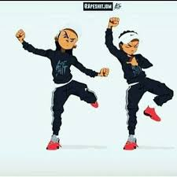
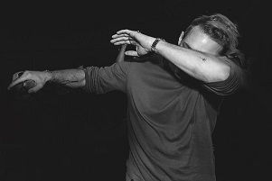
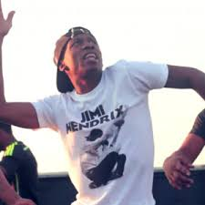

My hobby is dancing because I like to move to the beat to any song. The type of dancing I like isn't considered really dancing because it isn't ballet,tap, nor is it jazz. I don't do recitals or competitons it's just for when I'm bored so it doesn't have a catergory.
Another thing about dancing is making videos to go back and look at later. I use apps like dubsmash,thriller,and lomtiff to put it all together. On the weekend I could make like 15,not including the ones I mess up on. I really dance when I'm washing dishes,that's why I don't mind doing the dishes.
The dances I do are like the little dances that the older people call "stupid" which it is but it's simple and fun,the real names to the dances are hit them folks ,dabbin, reverseing the nae-nae,and milly rockin but I also like dancing to the hispanic music,like how you can just move your hips and feet with the beat. I like doing it in a group because it makes it more hype and its more enjoyable.
  The thing about dancing is that you need to have music so thats another hobby, listening to music while dancing. I can dance to no music but I prefer to have music so I don't look crazy. Any type of music gets me in the mood to dance so whatever it is I'm dancing. The specific music I listen to is hip hop, because the dances I do are from hip hop artist.
By:Valencia Y.